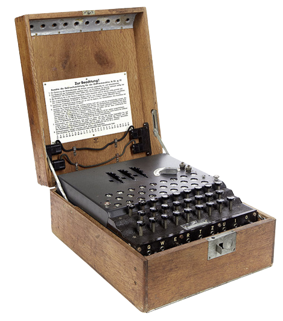

Czym była enigma?
Enigma – niemiecka przenośna elektromechaniczna maszyna szyfrująca, oparta na mechanizmie obracających się wirników, skonstruowana przez Artura Scherbiusa.
Złamanie enigmy:
31 grudnia 1932 r. polscy matematycy z Biura Szyfrów Sztabu Głównego Wojska Polskiego po raz pierwszy złamali szyfr Enigmy, której złamanie uważano za niemożliwe. Marian Rejewski odczytał pierwsze informacje przesyłane za pośrednictwem niemieckiej maszyny szyfrującej „Enigma”. Współautorami złamania kodu „Enigmy” byli Jerzy Różycki i Henryk Zygalski. Zdaniem historyków dzięki temu, że alianci znali informacje przesyłane przez „Enigmę”, II wojna światowa trwała krócej o 2-3 lata.
|

|